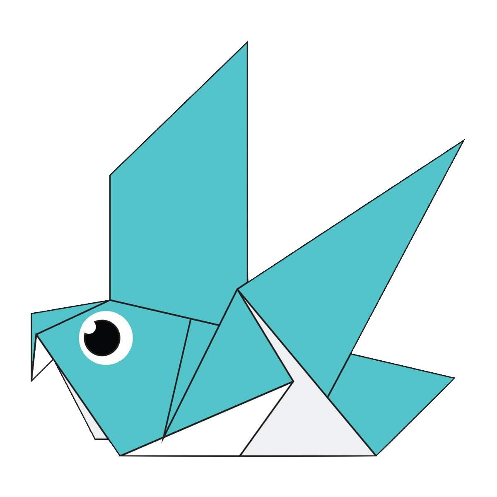

A camel is an even-toed ungulate that bears distinctive fatty deposits
known as "humps" on its back. This origami is simple and it can be done in
only 18 steps. It even has a hump on its back !

Chameleon are distinctive and highly specialised lizard which come in a range
of colors. Many species also has the ability to change the color. This origami
is easy to do and can be completed in only 18 steps.

Bears are carnivoran mammals of the family Ursidae. Although only eight species of bears are
extant, they are widespread, appearing in a wide variety of habitats. The origami can be completed
in 15 steps and look very cute !

The panda is a bear native to south central China. It is characterised by large, black patches
around its eyes, over the ears, and across its round body. The origami can be completed in only 9
and are adorable to look at !

The domestic pigeon is a pigeon subspecies that was derived from the rock dove. The rock pigeon
is the world's oldest domesticated bird. This origami can also be completed in 9 steps and does
fly for a bit !